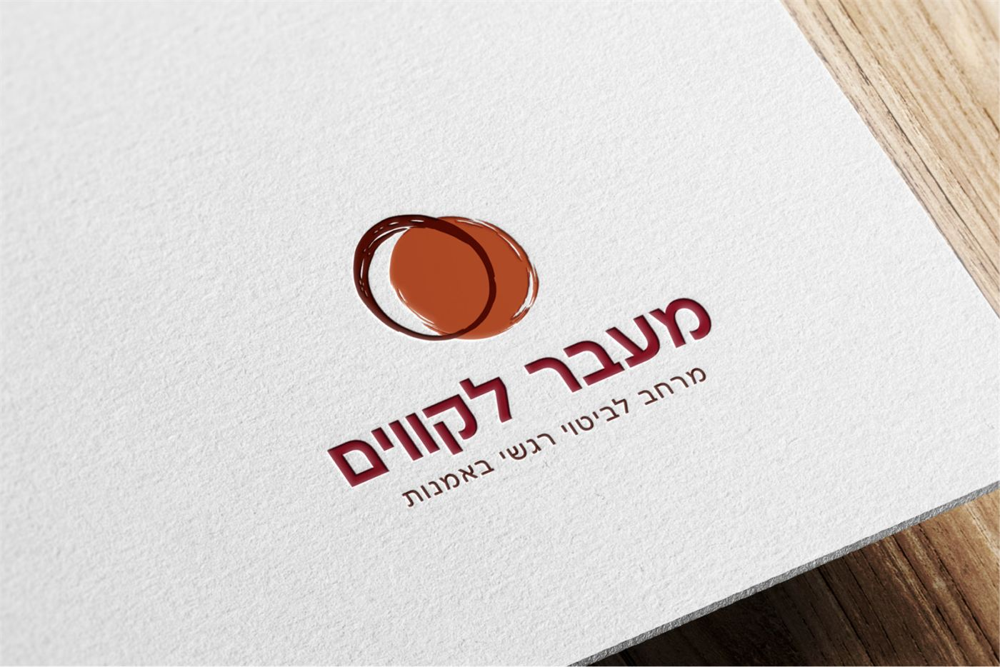
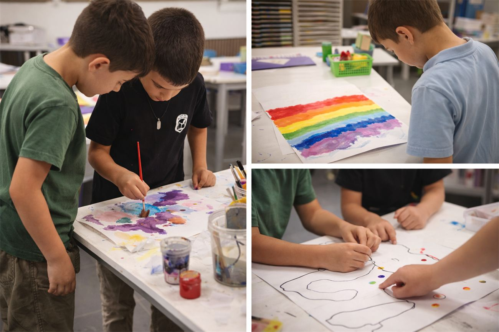
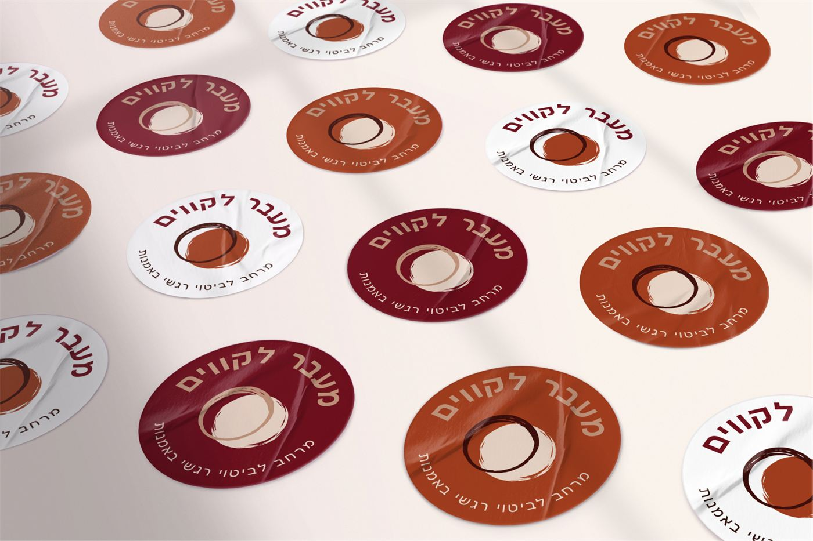
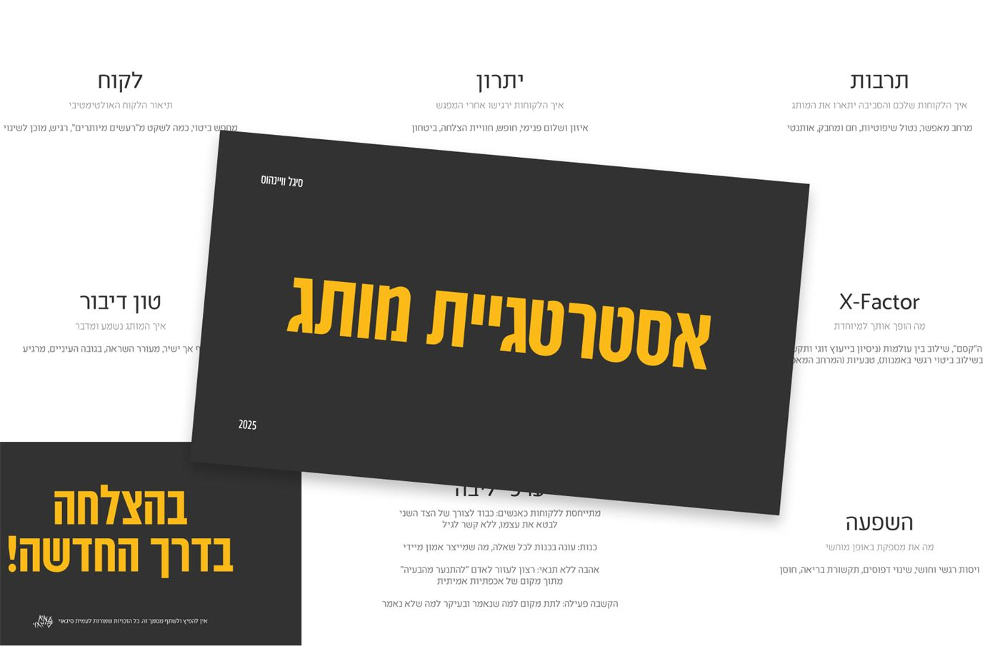
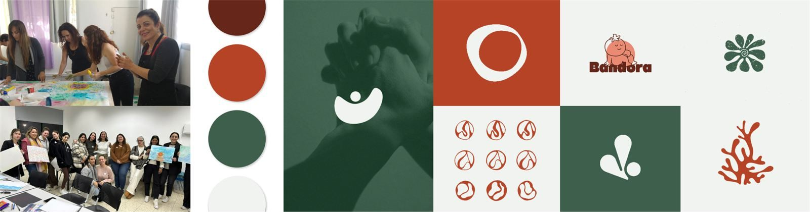
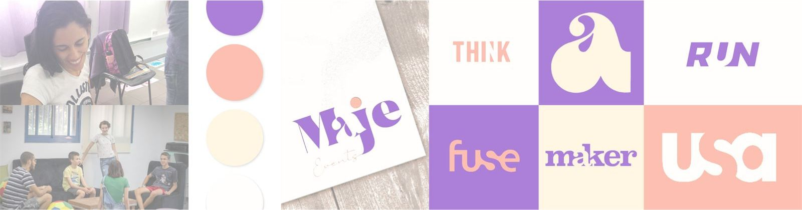
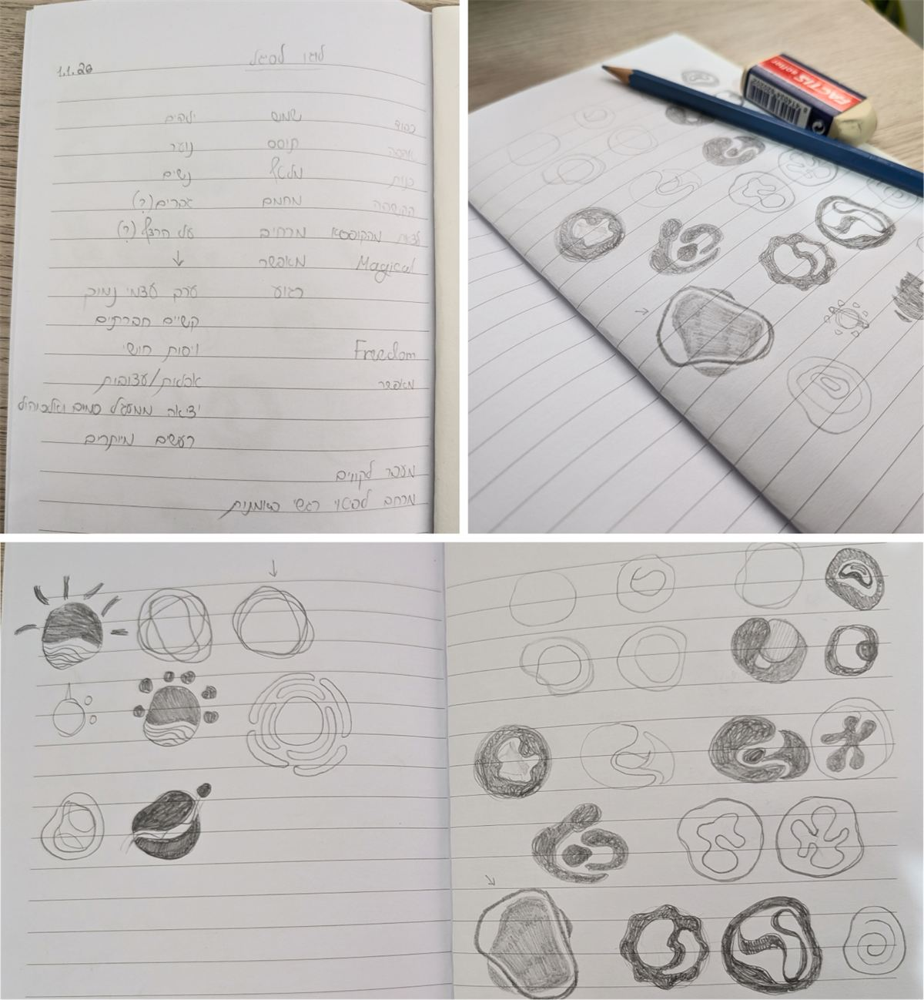
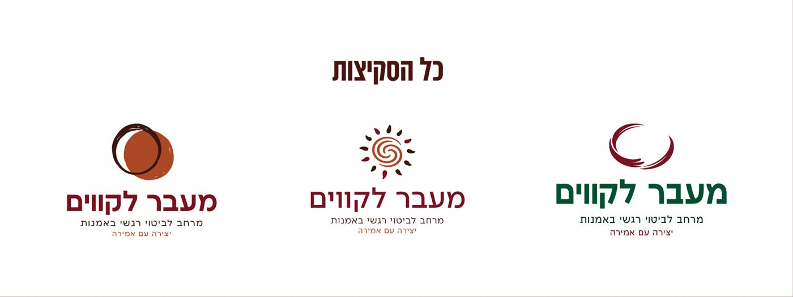
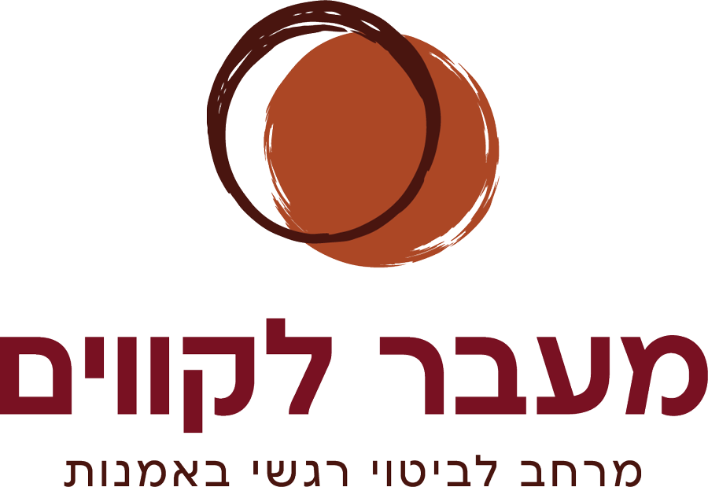
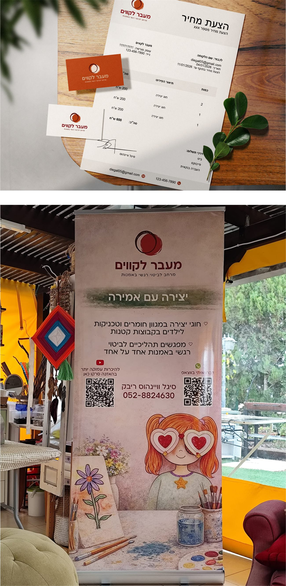

מרחב, לא טכניקה
סיגל מציירת, יוצרת ולפעמים גם אופה עם הילדים. לכן ויתרתי על מכחולים ועפרונות, והלוגו מספר על התחושה שהיא יוצרת ולא על הכלים.
קייס סטאדי
מיתוג למרחב יצירה וביטוי רגשי לילדים ונוער
"מעבר לקווים" הוא מרחב יצירה שבו ילדים ונוער יכולים לבטא את עצמם רגשית דרך אמנות, בלי שיפוטיות ובלי צורך להיות "מושלמים".
סיגל, שמפעילה את המרחב, הגיעה אליי כשהעסק כבר התחיל לצמוח מפה לאוזן, אבל עדיין לא הייתה לו זהות ברורה שתשקף את מה שהיא באמת יוצרת עבור הילדים.
המטרה הייתה לזקק את הערכים של המרחב - חופש, ביטוי עצמי ומקום בטוח - ולהפוך אותם לזהות ויזואלית פשוטה וברורה שתלווה את העסק.

מרחב
לביטוי רגשי
באמנות


המטרה
סיגל מפעילה מרחב בשם "מעבר לקווים" שבו ילדים ונוער יכולים ליצור, לבטא רגשות ולהרגיש חופשיים להיות מי שהם.
העסק התחיל בצורה מאוד טבעית. היא יצרה עם ילדים על הדשא במושב, אמהות ראו את זה וביקשו שגם הילדים שלהן יצטרפו. משם נפתח המרחב והפעילות התחילה להתרחב.
על אף שהעסק כבר עבד יפה והלקוחות הגיעו מפה לאוזן, עדיין לא הייתה לו זהות ברורה שתעביר את מה שסיגל באמת עושה.
המטרה הייתה ליצור זהות ולוגו שיבטאו את המרחב שהיא מאפשרת: מקום חופשי, מאפשר ולא שיפוטי שבו ילדים יכולים לבטא את עצמם דרך יצירה.
לא עוד טכניקת יצירה.
תחושה של מרחב שמאפשר.
התהליך
ניתחנו שהמיתוג של "מעבר לקווים" צריך לשדר חופש, מרחב מאפשר ואווירה לא שיפוטית.
התחלנו את התהליך ב"שיחת עומק" שבה צללנו לסיפור של סיגל, הדרך שלה והערכים שמובילים אותה בעבודה עם ילדים ונוער. במהלך התהליך גילינו שסיגל לא מגדירה את עצמה כמטפלת אלא כתומכת רגשית דרך אמנות.
העשייה שלה מגוונת: ציור, יצירה ולעיתים אפילו אפייה, ולכן היה חשוב שהמיתוג לא יתמקד בטכניקת יצירה אחת אלא יעביר את תחושת המרחב שהיא יוצרת.
חופש
וביטוי עצמי
מקום בטוח
ולא שיפוטי
מרחב,
לא טכניקה



בחרנו בכיוון של המרחב המאפשר, ובעזרתו הבאנו לידי ביטוי גם את הפעולה של היצירה.
שיטת הזרה
לפני הסקיצות אני כותבת שני מעגלים. במעגל הפנימי – כל מה שעולה מיד כשמדברים על העסק. במעגל החיצוני – מילים שקשורות, אבל לא בצורה שחושבים עליה ישר.
משם מגיעים הרעיונות שלא נראים כמו כל השאר בתחום.
האתגרים
האתגר הגדול בפרויקט היה לתרגם רעיון מאוד רגשי ומופשט כמו תחושת חופש וביטוי עצמי לצורה גרפית פשוטה וברורה של לוגו.
בנוסף, היה חשוב ליצור סמל עגול ועוטף שמייצג מרחב בטוח ולא שיפוטי, בלי שהוא ייראה כמו לוגו מעולמות טיפול אחרים כמו הריון, לידה או דולות.
האתגר היה למצוא את האיזון בין מרחב חופשי ויצירתי לבין תחושה מקצועית שמייצגת את הדרך של סיגל.



הפתרון
הפתרון היה לוגו שמבוסס על צורות עגולות שמונחות אחת על השנייה ויוצרות תחושה של מרחב עוטף ומכיל. הצורות משלימות אחת את השנייה ומייצרות תחושה של חיבור, קבלה וביטוי חופשי.
בנוסף, הצורה אינה מושלמת ויש בה מרקם מעט מחוספס. זו בחירה שמבטאת את הערך המרכזי של המרחב: קבלה של חוסר שלמות וביטוי עצמי.
ההחלטות
סיגל מציירת, יוצרת ולפעמים גם אופה עם הילדים. לכן ויתרתי על מכחולים ועפרונות, והלוגו מספר על התחושה שהיא יוצרת ולא על הכלים.
הסמל עגול ומכיל, אבל התרחקתי בכוונה מהשפה של הריון, לידה ודולות, כדי שהמרחב לא ייקרא כמו עוד קליניקה.
המרקם המחוספס והצורות שלא סגורות עד הסוף מזכירים לילדים בדיוק את מה שהמרחב אומר להם: לא צריך להיות מושלמים כדי ליצור.
התוצאה
הלוגו החדש מבטא את הרוח של "מעבר לקווים" - מרחב עוטף, חם ומאפשר לביטוי רגשי דרך יצירה. הוא פשוט, גמיש ויכול לעבוד במגוון שימושים: קבלות, הצעות מחיר, חומרים פרסומיים וחומרים נוספים של העסק.
המיתוג החדש נתן לסיגל תחושת ביטחון מקצועית וייצוג ברור למרחב שהיא יוצרת. פתאום היה לה משהו שמייצג את העסק שלה בצורה מדויקת, ושאפשר להשתמש בו בכל נקודות המפגש עם הלקוחות.

מה סיגל אמרה
סיגל שלחה לי סרטון קצר אחרי התהליך – הכי טוב לשמוע את זה ממנה.
בואו נבנה לעסק שלכם מותג שגורם לאנשים הנכונים להבין מהר יותר למה דווקא אתם.
תשאירו פרטים ואחזור אליכם עד 2 ימי עסקים.